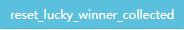
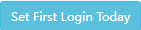

C activity
`在Admin网站修改任何数据，一定要确定好 “服务器端口” 选择的对不对！！！`
Spin Up Boost
progress: super spin up 积累次数
Repeat Win
Repeat Win: 60000000: 赢钱数量
Deadline: 2022-08-10: 倒计时，改成过去式的时间戳，可以重置活动数据并收奖
Repeat Win Plus
Repeat Win Plus: 0: 赢钱数量
Deadline: 1660190399: 倒计时，改成过去式的时间戳，可以重置活动数据并收奖
Uper Limit: 1055700000: 奖励上限值
Repeat Aid 20102
Jackpot Again
Total Win: 0: 赢钱数量
Limit Times: 0: 奖励上限值
End Time: 0: 倒计时，改成过去式的时间戳，可以重置活动数据并收奖
Boosted Win
Boosted Win: 0: 赢钱数量
Boosted Win Ratio: 0%: 赢钱后乘以的倍率
Boosted Win Limit: 0: 奖励上限值
Deadline: 0: 倒计时，改成过去式的时间戳，可以重置活动数据并收奖
lucky winner
Tickets: 彩票数量
Deadline: 活动倒计时
Lucky Winner type: 对应某个 Lucky Winner 活动的值
: 清除Lucky Winner活动的中奖状态
1.登录收奖
- 配上活动
- 完成购买得到
tickets - 下线
- 联系后端发奖
- 修改数据
- （
Activity: Lucky Winner I/II的Deadline修改为当前时间） - 点击  按钮
- （
- 下掉活动（等待约30s，活动配置完全刷新）
- 登录
2.跨天在线收奖
- 配上活动
- 完成购买得到tickets
- 下线
- 联系后端发奖
- 修改数据 （
Activity: Lucky Winner I/II的Deadline修改为当前时间） - 登录
- 下掉活动（最多等待约30s，活动配置完全刷新）
- 点击 Admin 的 按钮
服务器发奖后，活动中心会展示Lucky Winner活动的中奖状态！
点击 Activity: Lucky Winner I/II 的 可以清除活动中心的中奖状态显示